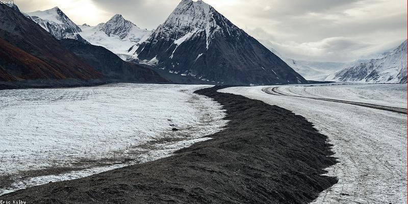

Global Environmental Impacts

Climate change is leading to profound changes in our environment, many of which are already occurring and will continue to intensify.
- Rising Sea Levels: As ice sheets and glaciers melt and sea water warms, it expands, causing sea levels to rise and threatening coastal communities.
- Extreme Weather: Hurricanes, droughts, floods, and wildfires are becoming more frequent and severe across many regions.
- Ocean Acidification: The oceans absorb much of the CO2 we release, which changes the chemistry of the water and harms marine life.
- Changing Ecosystems: Many plants and animals are struggling to adapt to changing temperatures and rainfall patterns.
Future Risks
If global warming exceeds 1.5°C above pre-industrial levels, the risks of catastrophic impacts on our environment and societies will significantly increase.